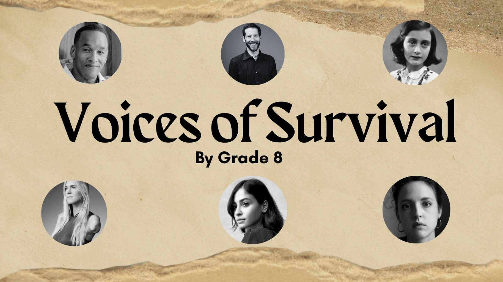

📖 Voices of Survival
"Courage is stronger than fear"
Designed by Yaman Haddad & Gasser Mohammed

📖 Yaman Bassam 8B1 — Dear Diary
I still remember the day everything changed. I was surfing in Kauai, Hawaii, chasing my dream of becoming a professional surfer.
Suddenly, a shark attacked me. I was terrified and in pain. But something inside told me to persevere.
Even after losing my arm, I stayed hopeful and determined. I returned to the ocean just one month later and kept fighting every day.
Today, I inspire others to never give up no matter how hard life becomes.
📖 Tala, 8G3 — Dear Diary
I was only a kid, and wrongly accused of a crime I didn't commit. As an African American kid, many people only saw the color of my skin instead of the truth. They took away my youth and never believed me — my freedom and chance were taken away so easily. It felt outrageous and deeply unjust.
At first, I froze in fear and disbelief, but over time I developed resilience and stayed hopeful. One coping strategy that helped me survive was believing justice would eventually come. Even though the trauma stayed with me, I refused to give up by remembering my family, my friends, and the life I once had before prison. If I had given up hope completely, I would have lost myself entirely. Instead, I chose to endure the suffering and continue fighting internally.
My dignity, resilience and my own human rights — eradicated. I was overlooked and sent my whole life behind bars and it felt endless. I miss my youthful years, walking happily, laughing until my stomach hurts, hanging around my best friends. All was assumed by a false accusation.
But I was patient, since I had to wait years for people to finally hear the truth. I was also tenacious because I never stopped believing my innocence would someday be proven. People can try to silence someone, but deep inside, the truth stays alive. I believe justice will come even if it takes centuries because it matters to hear the truth. Until then I have to stay strong.
— A voice of justice
📖 Farah, 8G3 — Diary of Aron Ralston
April 26, 2003
My name is Aron Ralston. I went on a hiking trip all by myself and did not inform anyone about my hiking plans. As I was walking through the deep, narrow canyons, a massive boulder fell — it first smashed on my left hand, and then crushed my right hand. Now my arms are trapped.
April 27, 2003
I felt terrified and helpless as I sit trapped between the cold canyon walls. The pain in my arm is unbearable, and I regret not telling anyone about my adventure. I keep thinking, "Will anyone find me?" The dark silence around me fills me up.
Still, I am trying to stay brave and positive. I know I cannot give up. I tell myself, "I'm strong enough to survive this." I drank my little water and ate my two burritos and tried to think how to escape. Even though fear fills up my mind, a small part of me still feels hopeful that I will make it home safely.
📖 Retal, 8G3 — Diary of Aron Ralston
I didn't tell anyone about my plans. I'm going canyoneering in Bluejohn Canyon. I packed two burritos and water.
Today is the day I go to the canyon. When I reached Wayne County, Utah, I canyoneered for a while until a boulder became dislodged and crashed onto my arm. It's heavy. Blood drips from my arm onto my shoes. I can't move it. Dark red blood trickles down as I lose sensation in my arm. My arm turns a bluish tint. I can't feel it. Am I going to survive? I didn't say goodbye…
It has been a day since I got trapped here. My lips chap as I reach for the water. Do I scream for help? Can I really cut off my arm? Thoughts overwhelm my mind as I scramble for ideas to escape alive. My phone has no service. Calm down. I eat some of my food and take small sips of water. My arm is losing circulation. I record a video to say goodbye to my family. I experiment with tourniquets to prepare for amputating my arm.
My food supply is decreasing, and my water has run out. Regrets and what-ifs run through my head. The pain in my arm is gone, replaced by numbness.
Today marks the fifth day. I have nothing left to eat or drink. I'm seeing things. I close my eyes as visions of me playing with a child without my arm overwhelm my mind. A small sense of warmth fills me. Maybe I'll survive.
This is the sixth day. It's time. I bite my lip as I prepare to amputate my arm. "It's gonna be okay," I repeat as I take out my pocket knife. Hours pass as I continue cutting. Finally, I sigh in relief. It's over.
I rush out and find a family nearby. They rush me to safety and call the authorities. I survived. Though I lost an arm, I made it back alive.
Yours, Aron
📖 Mahmoud, 8B1 — Diary of Aron Ralston
Day 1
Today marks the first day of me being stuck. I have only 1 litre of water. It's hot here at Bluejohn Canyon. I'm very frustrated at myself for going hiking alone. I'm trying to save as much food and water as I can.
Day 2 — April 27, 2003
I've tried to use my climbing ropes and gear to create a pulley system to move the rock; sadly, it didn't work. I regret ever coming here. I'm getting very tired and only have 2 burritos left.
Day 3 — April 28
I can't feel my arm at all. I'm in serious trouble. I'm ready to say goodbye. I recorded video messages for my family on the camcorder. I'm almost out of water and food. My hope is fading.
Day 4 — April 29
Today, I ran out of food and water. I have to get out fast. The boulder hasn't moved an inch, so I had to try cutting my arm with a knife that's dull, but the knife stopped at my bone. I gave up in despair.
Day 5 — April 30
I think I'm hallucinating. I'm dehydrated. I carved my name, birth date, and "RIP" on the canyon wall. This night, I had a vision of a young boy running toward a man with one arm.
Day 6 — May 1
Today, I feel determination to be free. I snapped my bones and cut myself loose with a dull knife. I feel so free and happy to finally get out.
— Aron
📖 Afnan — Diary of Bethany Hamilton
Today was one of the hardest days of my life. I went surfing early in the morning because the waves were calm and beautiful. The ocean looked peaceful and I felt excited and free in the water. Everything was normal until suddenly a shark attacked me. I felt shocked, scared and confused.
After the attack people quickly helped me and took me to safety. I was in pain and very frightened but I tried to stay strong. At the hospital I realized that my life had changed forever. I kept thinking about my family, my future, and whether I would ever surf again.
Even though I felt afraid I did not want to give up. My family supported me and encouraged me every day. Slowly I started believing in myself again. I learned that being brave does not mean you are never scared — it means continuing even when life becomes difficult.
This experience changed me a lot. I became stronger and more thankful for my life and family. I learned to never give up and to keep believing in myself no matter how hard life becomes.
— Bethany
📖 Abdelrahman Waleed, 8B1 — Diary of Bethany Hamilton
On October 2003, a brutal shark mangled my arm and left me traumatized. Yet a miraculous wave of peace fueled my survival.
Though frustrated, I adapted, eventually winning nationals, silencing cruel critics who called my surfing career hopeless. (Jun 2005)
Heavy waves at the pipeline threatened to crush me, but through intense hard work and sheer determination I managed to seal my victory. (Jun 2014)
Crushing the Fiji Pro demanded agonizing physical strength. Defeating world champions proved my skill. (Jun 2016)
This tragedy left me with many surfing struggles, but a global platform to inspire other athletes. (May 2026)
— Bethany
📖 Leen, 8G3 — Diary of Aron Ralston
I don't even know how to begin writing this… I am still shaking thinking about what happened in that canyon. I went into Bluejohn Canyon in Utah just looking for peace, for adventure, for a moment alone with nature. I never imagined it would turn into a place that almost became my grave.
When the boulder fell and trapped my arm, time stopped. At first, I thought I would be rescued soon. I told myself to stay strong, that someone would come looking for me. But as hours turned into days, hope slowly started to fade. The silence of the canyon became heavier than the pain itself. I ran out of water. I ran out of strength. But worst of all, I started running out of hope.
I thought about my family constantly. I even recorded messages for them, trying to say things I never thought would be my last words. That feeling… knowing you might never see the people you love again… it breaks something inside you.
By the fifth day, I was no longer just surviving — I was facing a choice I never wanted to make. I made the hardest decision of my life because I wanted to live more than anything else in that moment. Every second felt impossible, but somehow I kept going.
When I finally pulled myself free, I felt a strange mix of pain, relief, and disbelief. I was alive. I had escaped the canyon, but I will never fully leave it behind in my mind. It changed me forever. I don't take a single breath for granted anymore.
— Aron
📖 Retal, 8B3 — Diary of Anne Frank
Dearest Kitty,
We just arrived in the annex. Mother and father reside in the room next to my and my sister's room. There is a small bathroom and another room where the Van Pels family resides. Mother and my sister are still unable to cope.
We have to stay hidden all day. The air is rough and the walls feel clammy. My chest aches, making my ribs tighten on my heart. The world came crashing down on us, making us leave everything behind. Nothing can take me back. Father said we can't go back or make loud noises.
Thoughts overwhelm my mind, repeating what-ifs and hows. My ears ring as imagined scenarios of getting caught consume my mind. The silence is too loud. Father said to stay vigilant. Any sound could alert them.
I never saw the day where life felt insipid, slow, unnerving. Walls never caught my attention until now. The rooms are claustrophobic. The ceiling is low, and every sound resonates through the annex.
"Don't make a sound," father says.
Yours truly, Anne

🌟 "I don't need easy. I just need possible."